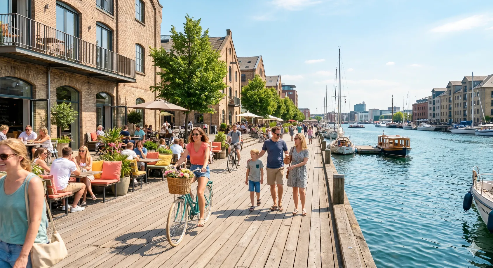

Visualisation.
Photorealistic images, architectural films, 360° tours and interactive models. From a single view to a complete project presentation.
Explore visualisationArchitectural visualisations, films and websites. Made by an architect, with an eye for how projects should look and feel.
Explore selected workA few ways to present architecture online. Explore five working website concepts for architects, designers and property developments.
 VOLUMArchitecture studio · Website concept
VOLUMArchitecture studio · Website concept
 Atelier VossArchitecture studio · Website concept
Atelier VossArchitecture studio · Website concept
 MeridianResidential development · Website concept
MeridianResidential development · Website concept
 OBJEKTInterior design studio · Website concept
OBJEKTInterior design studio · Website concept

Quay 9Waterfront development · Website conceptThese are design concepts, not commissioned client websites.
A complete image gallery, from individual details to entire architectural series. Select an image to explore the project.
The image and the place you show it belong together.
Photorealistic images, architectural films, 360° tours and interactive models. From a single view to a complete project presentation.
Explore visualisationCarefully designed, fast websites for architecture studios and developments. Project stories, content, implementation and search visibility.
Explore websites
I'm Michal. I trained as an architect and have spent more than a decade working with architectural imagery. I also design and build websites, so I understand both the work itself and how to present it.
You'll deal directly with me, from the first conversation to the final image or page.
More about the studio